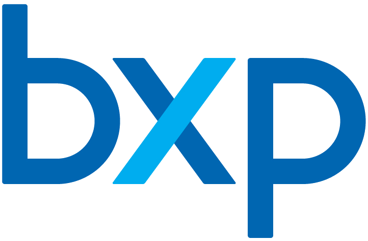

Boston Properties
Boston Properties는 미국의 상장 부동산투자신탁으로, 주요 도시의 업무용 부동산에 투자하고 상업용 자산을 보유하거나 지분 형태로 운용하는 회사이다.
최종 업데이트

Boston Properties는 어떤 브랜드인가
이 회사는 보스턴에 본사를 두고 보스턴, 로스앤젤레스, 뉴욕, 샌프란시스코, 시애틀, 워싱턴 D.C.의 주요 업무공간에 투자한다. 2023년 12월 31일 기준으로 188개 상업용 부동산을 보유하거나 지분을 보유한다.
이들 자산의 순임대 가능 면적은 약 53.3 million 제곱피트이다. 1997년 기업공개를 통해 상장했으며, 이후 미국 주요 도시의 대형 오피스 자산을 인수하고 개발했다.
현재 회사명은 BXP, Inc.이며 이전 명칭은 Boston Properties, Inc.이다.
Boston Properties는 어떻게 시작되고 성장했나
1970년 Mortimer B. Zuckerman과 Edward H.
Linde가 보스턴에서 회사를 설립했다. 1986년 뉴욕의 첫 개발 사업인 599 Lexington Avenue를 완공했고, 1990년에는 NASA Headquarters 건설을 시작했다.
1997년 기업공개로 상장한 뒤 100 East Pratt Street를 인수했다. 1998년에는 샌프란시스코의 Embarcadero Center와 보스턴의 Prudential Tower 및 The Shops at Prudential Center를 인수하며 자산 기반을 확대했다.
Boston Properties의 브랜드 아이덴티티는 무엇인가
보스턴과 뉴욕을 비롯한 미국 주요 도시의 대형 업무용 부동산을 직접 개발하거나 인수해 운용하는 상장 부동산투자신탁이다.
Boston Properties의 대표 제품과 서비스는 무엇인가
주요 사업은 미국 대도시의 업무용 부동산을 개발하고 인수하며 보유 지분을 운용하는 일이다. 주요 자산과 개발 사례로 599 Lexington Avenue, NASA Headquarters, Embarcadero Center, General Motors Building, 200 Clarendon Street를 포함한다.
Reston Town Center의 여러 오피스 건물과 워싱턴 D.C.의 901 New York Avenue NW를 개발했다. Hines Interests Limited Partnership과 Salesforce Tower를 공동 개발했으며 2019년까지 해당 부동산의 지분 100%를 확보했다.
Boston Properties는 지금 어떤 상태인가
2023년 12월 31일 기준으로 회사는 188개 상업용 부동산을 보유하거나 이해관계를 보유하며, 전체 순임대 가능 면적은 약 53.3 million 제곱피트이다. 공개 시장에서 거래되는 부동산투자신탁으로서 미국 주요 도시의 업무공간에 집중한다.
Boston Properties 로고는 어떻게 변해왔나
자주 묻는 질문
Boston Properties는 어느 나라 브랜드인가요?
Boston Properties는 미국의 금융 브랜드입니다.
Boston Properties는 언제 설립되었나요?
Boston Properties는 1970년 설립되었습니다.
Boston Properties의 브랜드 아이덴티티는 무엇인가요?
보스턴과 뉴욕을 비롯한 미국 주요 도시의 대형 업무용 부동산을 직접 개발하거나 인수해 운용하는 상장 부동산투자신탁이다.
Boston Properties의 대표 제품은 무엇인가요?
주요 사업은 미국 대도시의 업무용 부동산을 개발하고 인수하며 보유 지분을 운용하는 일이다.
Boston Properties는 현재 어떤 상태인가요?
2023년 12월 31일 기준으로 회사는 188개 상업용 부동산을 보유하거나 이해관계를 보유하며, 전체 순임대 가능 면적은 약 53.3 million 제곱피트이다.
Boston Properties의 창업자는 누구인가요?
Boston Properties의 창업자는 모티머 주커만입니다(위키데이터 기준).
Boston Properties의 본사는 어디에 있나요?
Boston Properties의 본사는 보스턴에 있습니다(위키데이터 기준).
출처와 검증
Boston Properties 관련 참고: 공식 웹사이트 · 위키데이터 Q4844439 · 영어 위키백과. 브랜드명은 한글과 원어를 함께 표기하되 데이터에 없는 표기는 만들지 않습니다. 기원 국가·설립연도는 검수된 정의문에서 확인된 값을 우선하고, 없을 때만 공식 웹사이트 URL이 일치하는 위키데이터 개체의 값을 씁니다. 위키데이터 값은 2026-09-12 기준입니다.